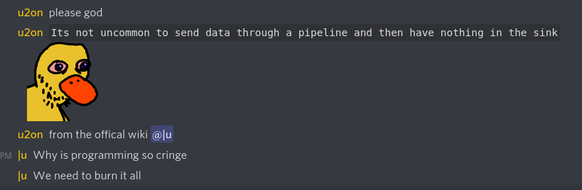

index
You're in my notes (somehow ...)
Until some semblance of order is established (tags, maybe?), here's a list of items in accessed order:
- headaches but with gravity, 07.03.2022
- op/status, 01.01.2000
You're in my notes (somehow ...)
Until some semblance of order is established (tags, maybe?), here's a list of items in accessed order: